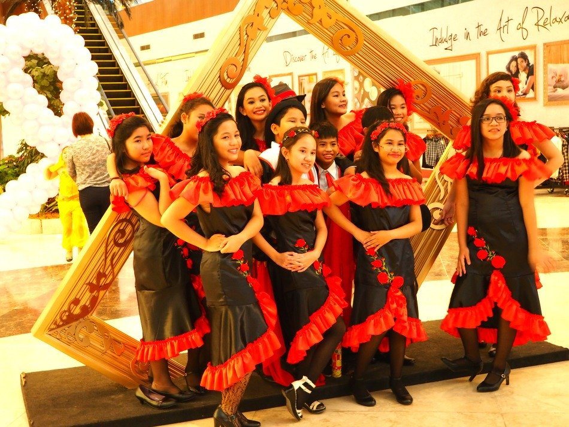

"Experience Cebu Culture... |
|---|
Breaking down the Philippines into three major islands (Luzon, Visayas, Mindanao) signifies diverse culture. Among the 7,107 islands, Cebu is one of those that represents diversity of culture.
Although Cebu is composed of one big island and surrounded with 167 islets, Cebuano or Binisaya is the common and widely spoken language, a language of Malay origin.
From these three major regional islands come a wealth of diverse culture with Spanish, Malay, Chinese, and other influences from neighboring countries.
Although the people of Cebu call themselves 'Cebuano' they also consider themselves as 'Pinoy' a common or shortened version from 'Pilipino'.
Cebuano, as widely spoken language in the Visayas region among the extant 80 languages, is also commonly used in Mindanao Island, which was spread due to the migration of Cebuano/Bisayan speakers.
Pinoys who are born and raised in Cebu can speak Tagalog (and English generally) since it is a required subject in the school curriculum.
However, Tagalog speakers normally cannot speak Cebuano since they never learn it formally, unless they have other means of obtaining the language, such as having origins or migrating to the province.
Art forms are diverse among Cebuanos. Before the coming of the conquestadores, Cebuanos used to paint themselves employing the nowadays popular tattoo art forms.
Although this form of art somehow vanished from the island, painting and other art forms are flourishing in myriads of medium. Many famous Cebuanos became clothing designers, furniture design artists, painters, sculpture, among others.
Another form of art common in Cebu is dancing. Dances could be interpretations of deity worship, religious devotion (as in Sinulog), or just ordinary dances done during various festivities in Cebu island.
The video clip shows some of such cultural performances...